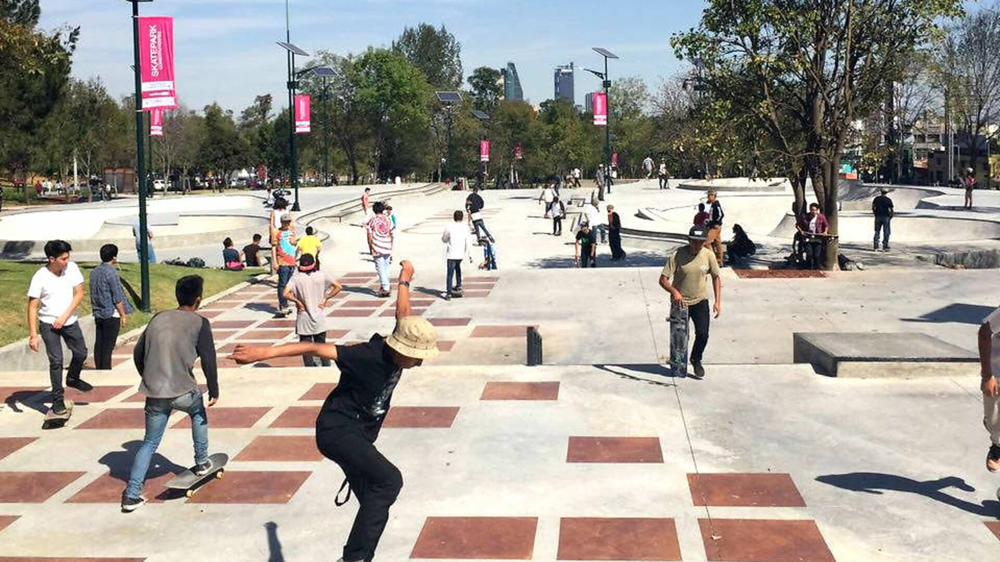

Spots recomendados 
1. Plaza de la República, CDMX
Ubicada en el corazón de la Ciudad de México, la Plaza de la República es un spot icónico para los skaters urbanos. Sus amplias explanadas, escalones, planters y barandales de mármol la convierten en el lugar perfecto para practicar líneas largas y grabar videos al atardecer. Además, su ubicación céntrica la hace ideal para conectar con otros riders y participar en jams espontáneos.

3. Skatepark Constituyentes, Querétaro
Diseñado con la asesoría de patinadores profesionales mexicanos, este parque ofrece módulos para todos los niveles, desde principiantes hasta expertos. Sus luces nocturnas y área para niños fomentan la inclusión y la convivencia familiar, haciendo de este spot un referente en la región.

4. Parque Metropolitano, Guadalajara
Rodeado de áreas verdes, el Parque Metropolitano es ideal para quienes buscan un ambiente relajado y seguro. Sus módulos permiten practicar trucos técnicos y grabar clips con un fondo natural espectacular. Es un lugar perfecto para patinar en familia o con amigos.

5. Malecón de Veracruz
Patinar junto al mar es una experiencia única. El Malecón de Veracruz ofrece barandales naturales, gaps y superficies lisas ideales para lines creativas. Las vistas al amanecer y la brisa marina hacen de este spot uno de los favoritos para sesiones fotográficas y videos.

6. Zócalo de Oaxaca
El Zócalo de Oaxaca combina piso liso, arquitectura colonial y un ambiente cultural vibrante. Es importante respetar los horarios y eventos comunitarios, pero fuera de estos momentos, el lugar se convierte en un escenario perfecto para patinar y convivir con la comunidad local.

7. Skatepark Revolución, Tijuana
A un paso de la frontera, este skatepark es un punto de encuentro entre riders mexicanos y estadounidenses. Sus bowls, rampas y rails de alta calidad lo convierten en un destino obligado para quienes buscan mejorar su técnica y conocer nuevas tendencias.

8. Parque Fundidora, Monterrey
Con espacios amplios para downhill y flatground, el Parque Fundidora es ideal para quienes disfrutan de la velocidad y la libertad. Es importante tener precaución con los peatones, especialmente los fines de semana, pero el ambiente es siempre amigable y seguro.

9. Tlaquepaque Skate Plaza, Jalisco
Este spot destaca por su diseño street-plaza, con bordillos de granito y ledges perfectos para grinds y slides. Es un lugar frecuentado por patinadores locales y visitantes, y suele ser escenario de competencias y eventos culturales.

10. Bosque de Chapultepec, CDMX
El Bosque de Chapultepec ofrece áreas planas, sombras y vistas al lago, lo que lo convierte en un spot ideal para principiantes y para quienes buscan un ambiente tranquilo. Es perfecto para practicar trucos básicos y disfrutar de la naturaleza en pleno corazón de la ciudad.